Technical Writers add page-level help and inline help to the pages in the Syniti Knowledge Platform (SKP).
The dev environment to view changes is Home | Syniti Knowledge Platform (syniti-dev.com)
The process is tracked with this googledoc: Add or Edit Inline Help for the Knowledge Platform.
Developers and Technical Writers work together to ensure that the pages in the SKP UI have correct and complete settings to support internationalization/localization and inline help.
The following attributes are used for inline help:
|
Attribute |
Description |
| description | text that displays below the label (outside of the text area) |
| placeholder | placeholder or watermark text |
| help | the help icon |
| hint | definition of a list box option that displays below the field |
| label | Labels in the UI, if an update is needed to wording to make it clearer. |
| no-results-title | Title text for no search results pages |
| no-results-message | Message text for no search results pages |
|
blankslate-title |
Title text for no [things] added yet pages |
|
blankslate-message |
Message text for no [things] added yet pages |
Add the tag to every label, description, placeholder and help icon that needs to be translated or needs help in the skt-ui repo, using the keys the doc team has added to i18nexus.
NOTE: Tags are created by developers in the skt-ui. Tag names may come from tech writers and are added to Jira tickets, or a developer may add the tag and send it to the writer.
Add namespaces and keys (corresponding to tags) to i18nexus.com (if needed)
After documentation has updated the files, run a command to pull updated .json files from i18nexus (if requested)
Push the updated files to a PR for deployment with vercel (if requested)
Write the inline help in Google docs.
Add keys and inline help content to i18nexus.com
Let developers know when there are updates to be deployed (if needed)
Review PRs as requested by development
Add PRs without development help
Perform doc peer reviews
As part of the internationalization effort, developers add tags to each string of text on a page that the TWs can pair with a key and value to use to add the inline help. The values that match the keys are stored in localized files, and the application refers to them when generating help for the SKP page.
NOTE: Keys may be page-specific or may be used in multiple pages across the product.
Here’s a list of tools used within the inline help process:
GoogleDocs - Draft your content in a Google doc to make it easy for reviewers to offer feedback and collaborate on the inline help.
i18Nexus - Rather than directly editing .json files, the writers use a web UI (i18nexus) to add and edit the inline help. Writers also use i18nexus to create a namespace (basically a file) for different sections of the SKT and enter the tags (referred to as Keys in i18nexus) for each page.
Vercel - Vercel creates a unique environment for every PR that can be used as a test site. The Preview link (located in the PR) is sent to PM and writers for reviews.
Skt-ui repo in Git - This repo is where the code for the pages is stored, and where the PRs are created and merged. In most cases, an automated git process controlled by the writers creates a PR. A developer can also include help updates in a PR they are working on.
Containing standards for keys used in translations
https://github.com/BackOfficeAssoc/skt-ui/wiki/Localization
When working with inline help, writers can either:
Create a new record (i.e., a new piece of help content on a UI page) with a tag (i.e., key) pulled from the UI and added to i18nexus
Create a new record that does not have a tag in the UI and add it to i18nexus
Update an existing tag in i18nexus
To add and update inline help on a page:
Locate the tags that are being used for the label, description, placeholder or help icon on a page in a development site by pressing F10.
To locate the key for a help icon, hover over the icon.
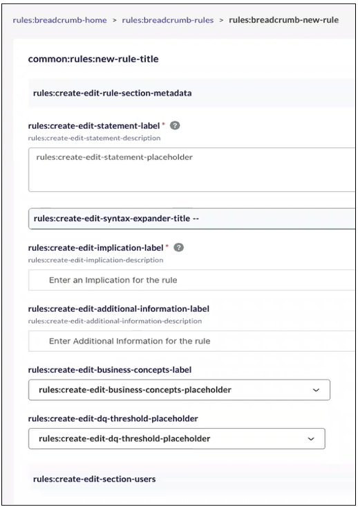
NOTE: If you press F10 and the field text does not change, that means that a developer has not created a tag for it. Writers must create the Key along with the inline help. Refer to Create a Key for more information.
Log in to i18nexus.com and access the SKT-UI project.
Click English.
NOTE: The tag may start with the asset name or “common” indicating the key-value is used in multiple places in the SKT.
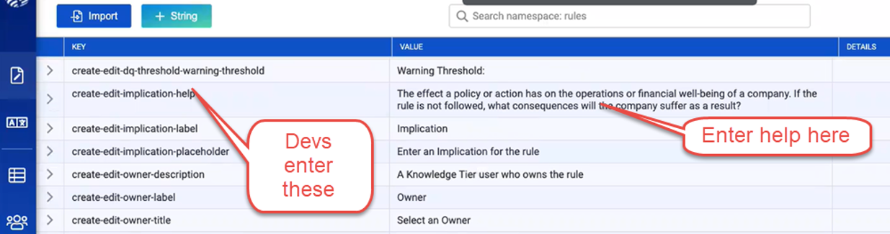
If adding a new element of inline help (i.e., a String):
Click the +String button.
Add the KEY, which is the tag that links the inline help content to the element in the UI.
Add the VALUE, which is the inline help text.
Click the check mark.
If editing an existing element of inline help:
Click the dot menu in the right-most column and select Edit String.
Make updates as necessary.
Click the check mark icon to save the update.
For text on the UI to have inline help, a writer must add a key for it in i18nexus. The developer must then add that key to the skt-ui repo in github.
Use the following naming convention to create keys:
Create/Edit pages
Naming convention: create-edit-[tab]-[card]-[attribute]
Example: create-edit-overview-metadata-definition-description
View/Display pages
Naming convention: [tab]-[card]-[attribute]
Example: overview-metadata-definition-description
NOTE: Since the namespace in nexus is named after the page, there's no need to duplicate the page name in the key
Refer to the developer guidelines for more detailed information.
The following screenshot shows examples of key naming standards to follow. Note that the key is prefaced with the namespace to generate the tag for the UI. In this example, the namespace is Rules.
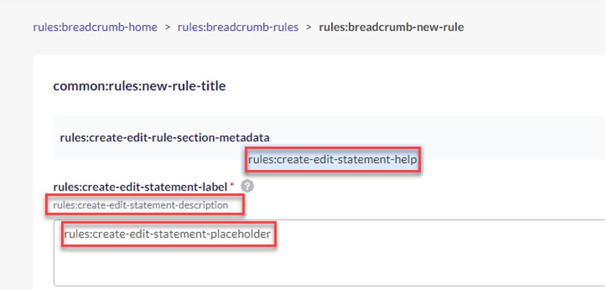
To create a key:
Create a ticket to track the tag work per namespace. Look at KYB-3897 as an example.
When all the keys and inline help are in i18Nexus, send the ticket to the lead developer so the tags can be added to skt-ui, which will make all the content visible in the UI.
Add the ticket to this epic [KYB-3845] SKT UI Release - Syniti JIRA (atlassian.net).
Once the developer has added the keys to the UI, create a PR to see the inline help appear in the UI.
Log in to GitHub and open the skt-ui repo.
Click the Actions tab.
Click Update Localizations.
Click the Run workflow list box.
Click the Run workflow button.
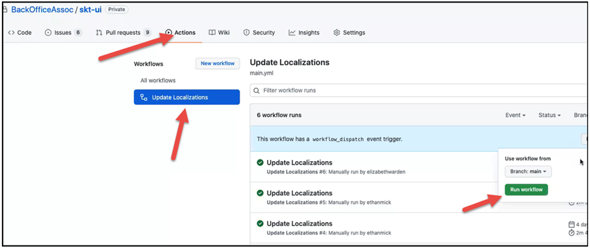
NOTE: This action pulls down the latest content from the main branch and the local files from i18nexus and creates a PR called [Doc] Update Localizations. This action takes about 2-3 minutes to run.
Open the [Doc] Update Localizations PR.
Click the Preview link, which is automatically generated by Vercel, to view the changes.
Send the link along with the Google doc to PM for review if a lot of technical content has been added or if introducing a new feature or enhancement. Fixes for standards and typos found in Doc reviews don’t need PM review.
Implement any suggestions from the PM.
NOTE: When pushing additional commits to this branch, once you git push, Vercel automatically updates the PR and creates a unique environment, so no further action is required in git other than making sure the commit deploys without failing.
Send the Vercel link with the Google doc to #experience-org and request a peer review.
NOTE: Once content has been reviewed, merge the [Doc] Update Localizations (which is automatically generated) to main.
Return to the [Doc Update Localizations] PR.
Verify that all checks have passed and nothing has failed.
NOTE: If something failed related to code in the skt-ui, post the PR to the #skt-ui-release channel for assistance.
NOTE: If a localization PR waiting for review gets merge conflicts (because changes had been made to skt-ui since the PR had been opened), Instead of resolving each conflict individually, you can run the workflow again. If no conflicts occur in the new PR, you can close the old PR with the merge conflicts.
Request a review on the PR from a doc team member.
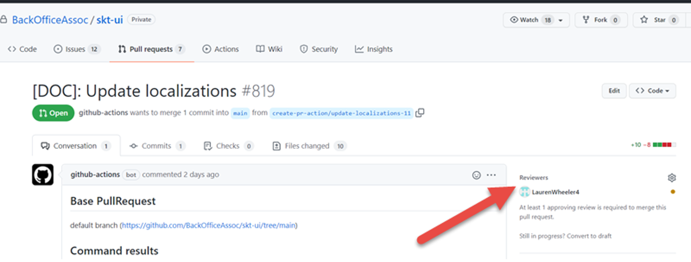
The reviewer you have assigned (in this case, a doc team member) receives an email, clicks the link to the PR, and approves the PR.
Click the Squash and merge button.
Click the Confirm squash and merge button. Your changes have now been merged to develop. It takes a few minutes for changes to appear in the UI.
QE’s automated tests use the labels on the page to drive testing. If a Tech Writer updates a label, this breaks the test. In this case, @ mention the tester on the ticket tracking the work. Include the name of the old label and the new label on the ticket.
If writing inline help in conjunction with the development of the feature, let the developer working on the feature know that they must run a command to pull down the latest version of the files from i18nexus. After getting the latest files, the developer pushes that content up to github with a PR, where it is deployed using Vercel.
If a field, list box, or other control does not have a label (a localization), it could be that the developer has not yet added a tag. However, it could also be that until that point the design did not include the label, but that a tag has already been added.
Here the cursor points to where a label could be on this field.
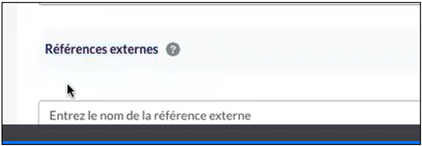
After pressing F10, the tag that has been added displays.
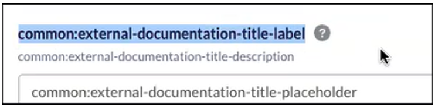
To add the label, add the tag as the Key and the help text as the Value in i18nexus.
Developers mention the doc team on PRs that require a review.
TWs review content related to their assigned missions.
To view relevant active PRs for the team, view the list of PRs using the Review filter “Awaiting review from you or your team.”
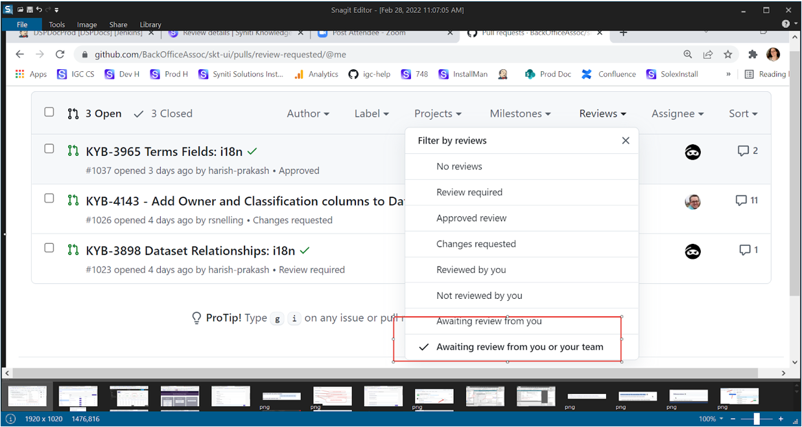
Access page-level help by clicking the ? icon in the upper right on pages in the SKP.
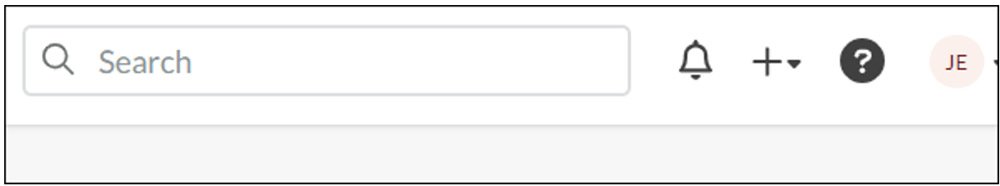
NOTE: Have PM review and approve page-level help content before you add it, so the PR can move through the process quickly to avoid merge conflicts.
Just as with inline help, this page-level help is stored in i18nexus. Instead of entering a key for a corresponding tag entered in the skt-ui, Technical Writers enter the route for the page in the Key field.
Page-level help is written in markdown. Here are some markdown resources:
Markdown Guide: https://www.markdownguide.org/
Quick tutorial: https://www.markdowntutorial.com/
i18Nexus doesn't have a markdown preview, so you can use something like https://stackedit.io/app# or VS code to preview your work.
NOTE: In VS Code, to preview the formatted markdown, press Ctrl+Shift+V.
While working in i18nexus, you can only see the markdown formatting, For example, the first line is formatted as a heading one (#) in i18nexus:
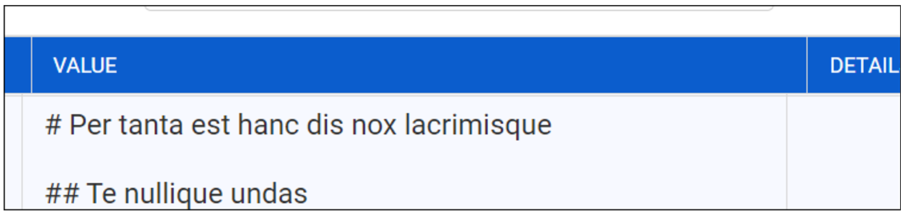
The page-level help displays the formatting like this:
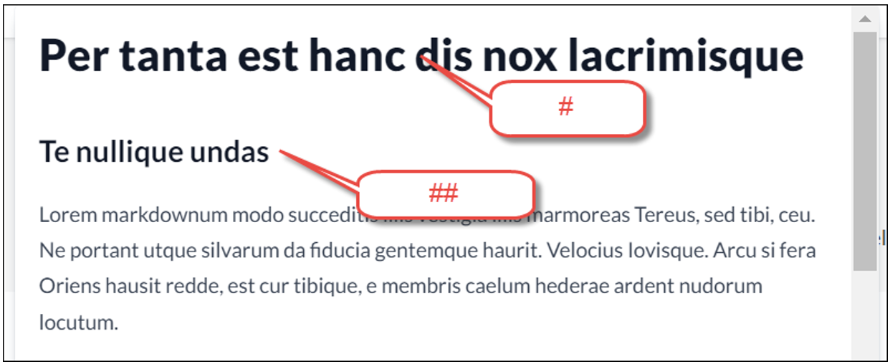
After the content is formatted correctly, add it to i18nexus.
To add page-level help:
Determine the route for the page in github. Access the list of routes here:
https://github.com/BackOfficeAssoc/skt-ui/blob/main/config%2Froutes.ts
Go to the page you’re adding page-level help for
Look at the URL after “.com.” In this example, we have “datasets/[ID]/[version].
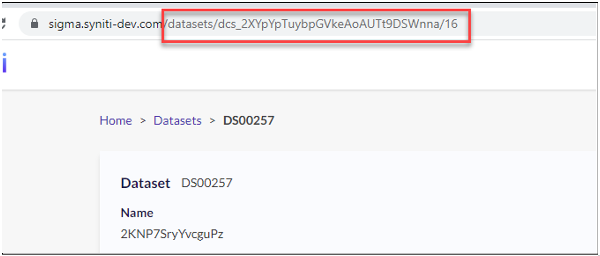
If you look at the route list, we know that of all the routes for datasets listed, the page in the above example uses this route:
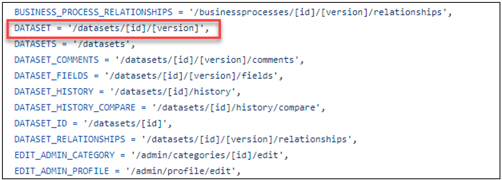
Select and copy the text inside the tick marks (``)as indicated below, including the forward slash ( /).
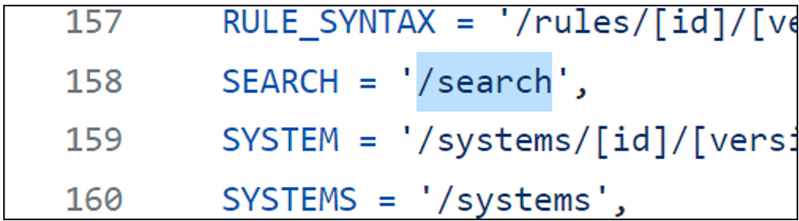
Log in to i18nexus.com and access the SKT-UI project.
Click English.
Open the page-help namespace.
Click the + String button.
Paste the route into the KEY field.
Paste the page level-help into the VALUE field.
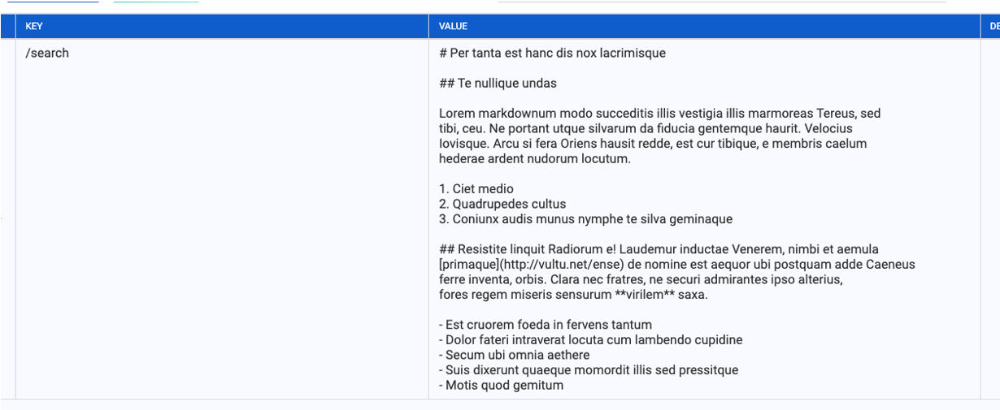
Click the check mark icon to save the help.
NOTE: Scroll down to find this check mark.
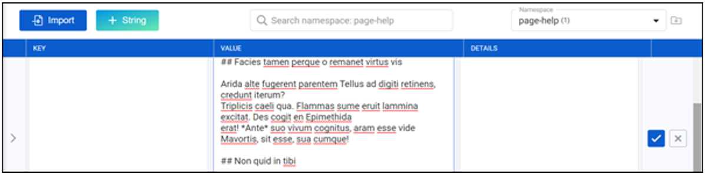
After adding the help, continue with creating the PR in github.
NOTE: Pages will likely require multiple strings that will open the page level help on the new, edit, and display pages. Additionally, page level help can be set at the tab level. Each of these pages will require a string in i18nexus, even if the page level content is identical. Review the datasets example in i18nexus.
Add HTML formatting to all links so that the link opens in a new tab, as in:
Data quality thresholds also support the calculation of the <a href="https://skthelp.syniti.com/Welcome.htm" target="_blank" >Business Process Data Quality Health indicator</a>.
Create a “Read more” with a caret to expand and collapse text. The <details> are set at start and end of the statements, and then the caret has <summary> on either end of it.
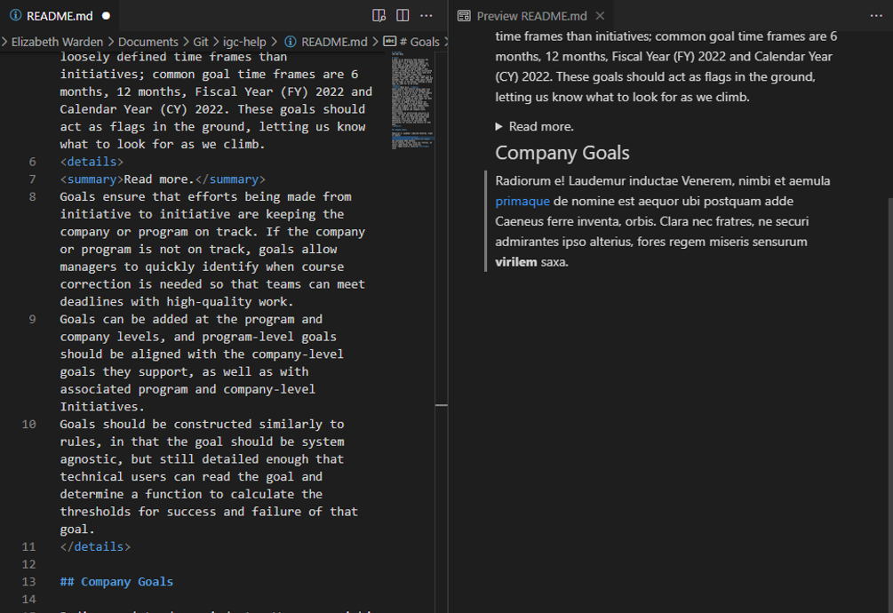
Use this format to direct users to another page in the product:
<a href="/admin/custom-relations" target="_blank" rel=”noopener noreferrer”>Take me there</a>.
NOTE: You cannot use this if the hyperlink to the page contains [version] or [id] in its route.